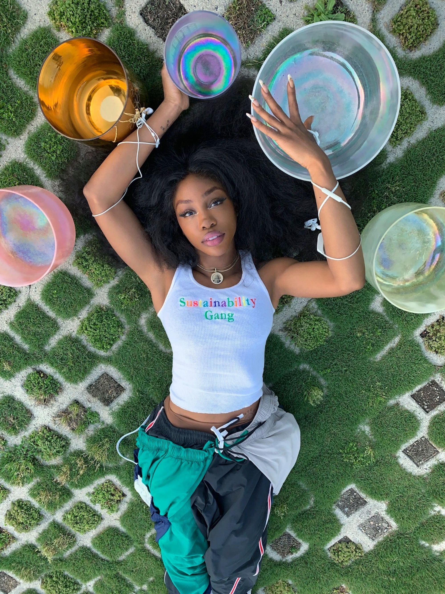
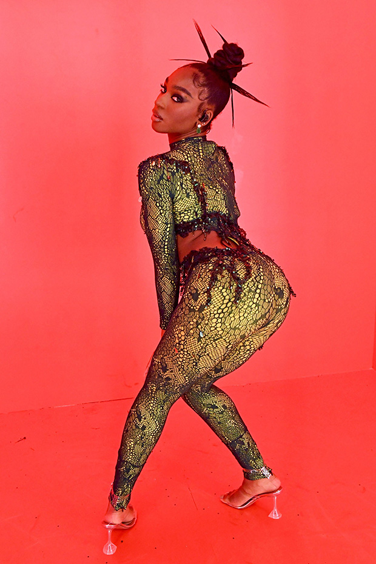
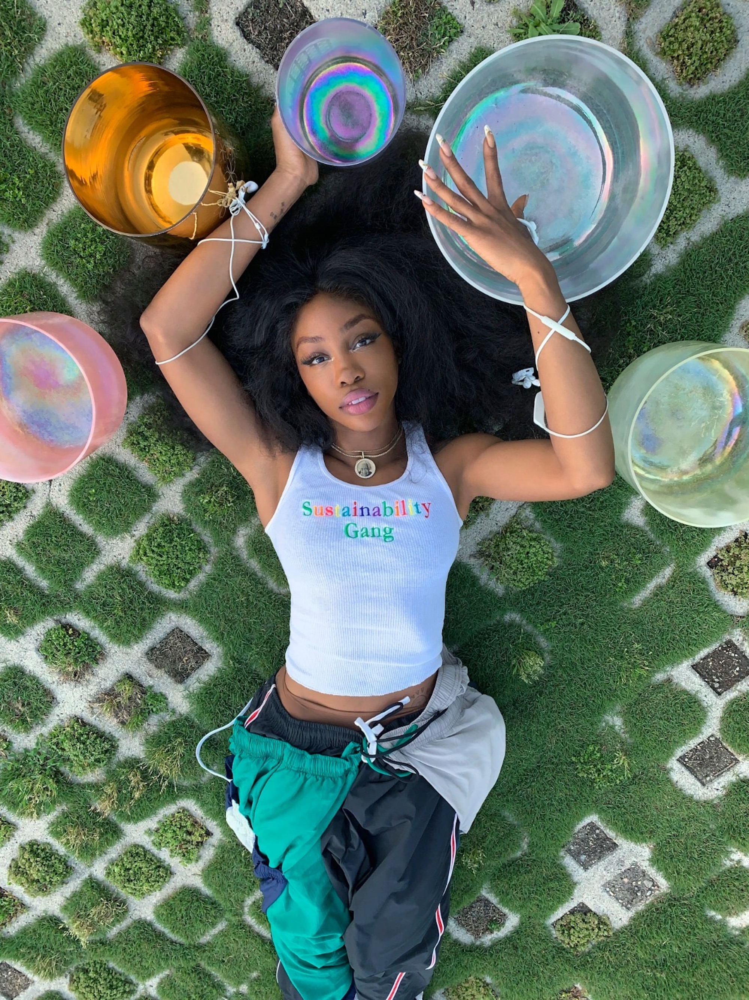
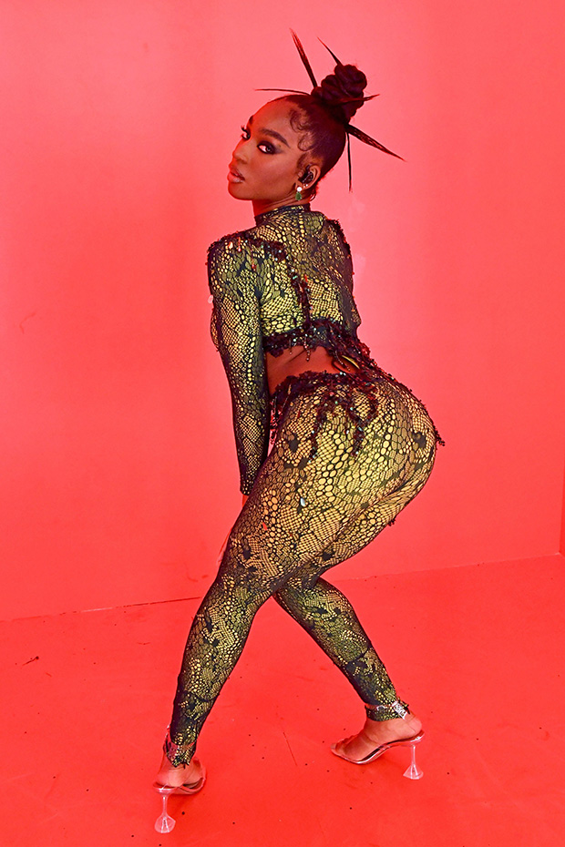
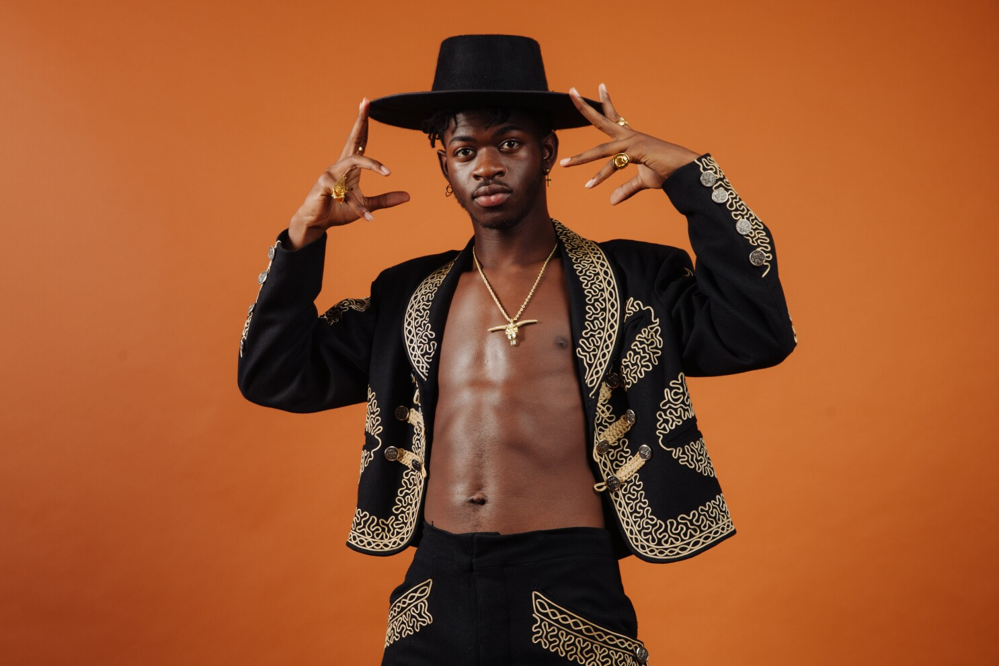
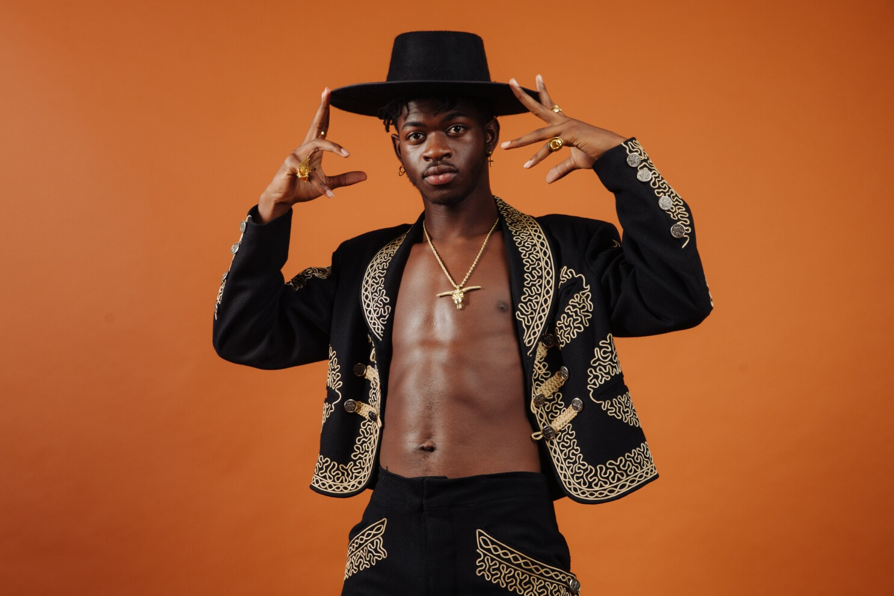

 


The Importance of Mainstream Artists
In the music industry, there has always been a select few who hold the top spots. Hierarchical titles such as “King of Pop”, “Queen of Rap”, and more emphasize these subtle power structures which afford certain artists more privileges than others. Although these privileges were somewhat earned after years of hard work, to rise to the top, it is still important to understand the affordances which they allow. Bigger artists can more freely take risks than their smaller counterparts. However, this also allows them to reach large audiences as well. The below artists are viewed as prominent, or mainstream and have used their “industry power” to showcase representation, innovation, and bravery in such a cutthroat industry.
Examples:
Beyonce, similar to her musical peers Rihanna and Nicki Minaj has shown society the importance of a strong leading woman. One who is multidimensional and more than her music career. Beyonce has extended her career into cinema, and fashion.
Rihanna had definitely trailblazed a path for black women in the music industry. Shifting effortlessly through genres and personas she highlights the multi-dimensional elements of black women, shifting the conversation away from the stereotypical biases placed on women.
Lil Nas X, one of the most popular artists amongst this list has made ground breaking moves since he arrived on the scene. His first breakout single broke countless records, landing him a number 1 on the billboard hot 100, and 2 grammys. Shortly after, Lil Nas X came out to the world as gay, providing the music industry with one of the only representations of a queer black male in mainstrain media. After facing tons of scrutiny, Lil Nas X has shown the world that he is here to stay, dropping a critically acclaimed album, and gaining accolades daily.